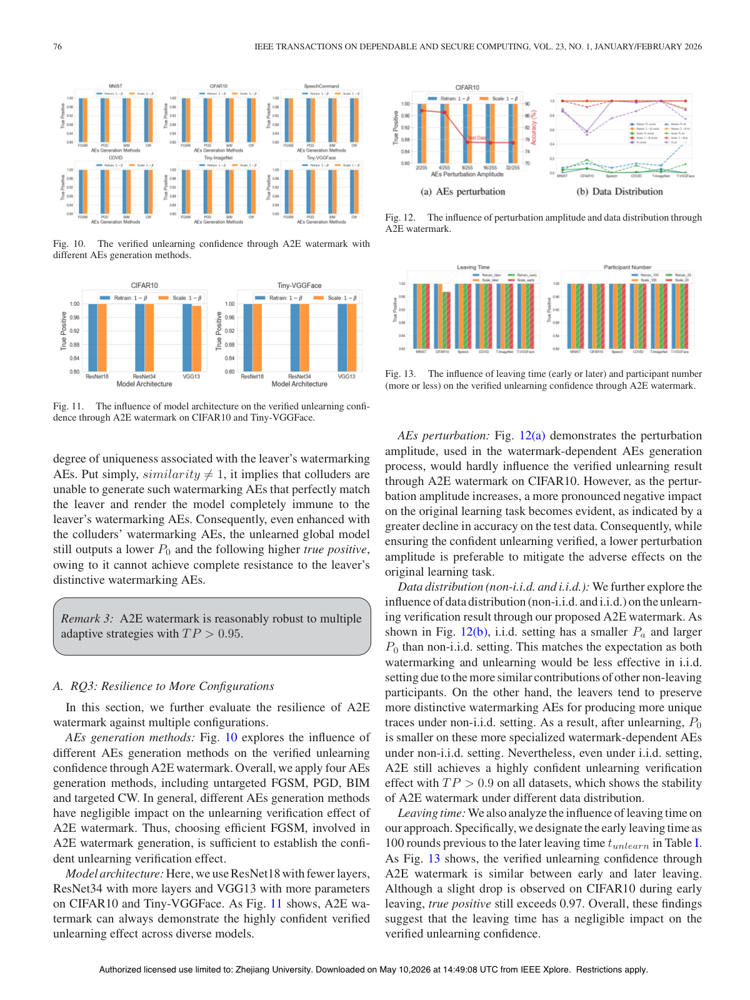

A2E: Black-box Anti-adversarial Example based Watermarking to Verify Federated Unlearning
IEEE Transactions on Dependable and Secure Computing (TDSC), 2025

Abstract
—Machine unlearning is the primary way to fight for the “right to be forgotten” in machine learning field, which is promoted among multiple privacy legislations, such as GDPR and CCPA. However, the latest work has shown that machine unlearning in deep learning cannot be easily verified, making it challenging for the data owners to be convinced that their data has indeed been deleted as claimed. This is especially problematic for federated learning (FL), where a number of participants jointly train a global model while each participant should be free to join and leave the federation as they wish. However, the lack of a reliable approach to verify unlearning in FL will no doubt discourage certain users from joining the federation. In this work, we propose A2E, a black-box watermarking scheme from a leaving participant’s perspective to realize verifiable federated unlearning which incurs minimum impact and no security threats to vanilla FL. The key idea is to leverage adversarial training to inject the anti-adversarial example (A2E) characteristic into the uploaded model updates of the last contribution round as the watermark of the leaving participant. Then, we verify whether the server has indeed executed the effective unlearning, with the newly developed probabilistic quantification of unlearning confidence, by checking the unlearned global model’s resistance to the specially generated watermark-dependent adver- sarial examples of the leaver . We conducted large-scale experiments on various popular datasets (including natural images, medical im- ages, and speech) and model structures (including LeNet, ResNet, VGG, and LSTM). The results confirm the effectiveness of A2E in verifying federated unlearning with a high confidence. We also show that A2E is robust against multiple adaptive strategies from the adversarial server and participants.
Resources
Citation
@inproceedings{GWZCCC25,
author = {Xiangshan Gao and Jingyi Wang and Zhikun Zhang and Jialuo Chen and Peng Cheng and Jiming Chen},
title = {{A2E: Black-box Anti-adversarial Example based Watermarking to Verify Federated Unlearning}},
booktitle = {{Transactions on Dependable and Secure Computing}},
publisher = {IEEE},
year = {2025},
}